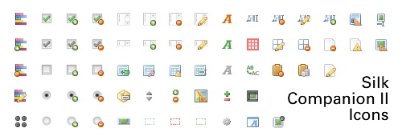

Mark James created a great set of 1,022 silky-smooth 16x16 true-colour
icons in PNG format, aptly named Silk Icons.
GeoSilk icon set by Rolando Peñate
http://projects.opengeo.org/geosilk
The GeoSilk icon set is derived from the Silk
icon set by Mark James, the Silk Companion set
by Damien Guard, and the uDig icons made by
Jody Garnett of Refractions Research. It aims
to extend the Silk icon set to address the
needs of geospatial software.
License
This work is published under the
Creative Commons Attribution 3.0 License by Damien Guard.
Source
These Icons come from http://www.cagintranet.com/archive/download-famfamfam-silk-companion-2-icon-pack/
readme_companion (txt)
Icons

See also: FamFamFamContrib, DocumentGraphics, FamFamFamSilkIcons, FamFamFamFlagIcons, FamFamFamMiniIcons, FamFamFamMintIcons, FamFamFamSilkGeoSilkIcons